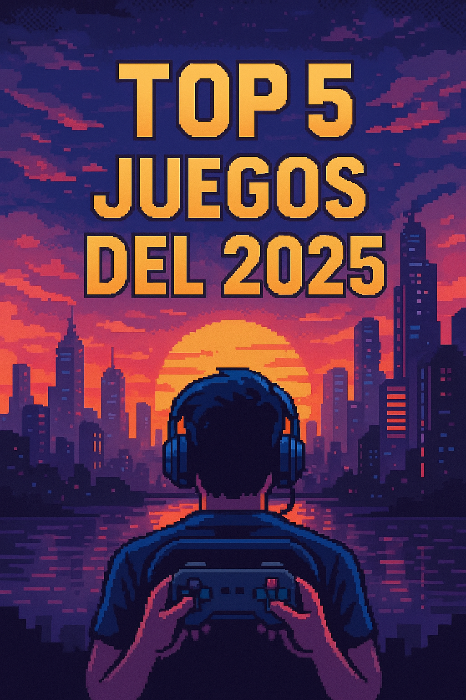
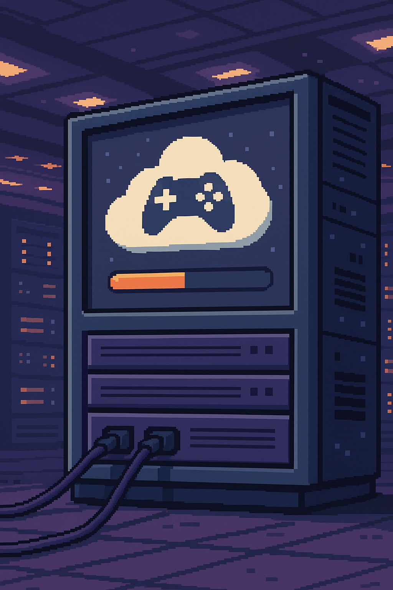

Últimos Artículos
Top 5 Juegos del 2025
Publicado el 8 de julio de 2025

Descubre los 5 juegos más esperados y mejor valorados de este año. Desde acción hasta estrategia, ¡hay para todos los gustos!
La industria del videojuego sigue evolucionando, y en 2025 nos sorprende con títulos que marcan un antes y un después. Entre ellos destaca *Cyber Strike: Reborn*, una entrega futurista con una historia inmersiva y una jugabilidad cargada de adrenalina. Por su parte, *Kingdoms of Ember* introduce una mecánica de combate táctica por turnos con decisiones que afectan profundamente el desarrollo de la historia. *Puzzle World XR* innova con su integración de realidad aumentada, ideal para quienes buscan retos mentales. También encontramos *Speed Horizon 5*, que redefine las carreras arcade, y *Legends of the Core*, una aventura narrativa con gráficos 2.5D que ha emocionado a los fans del género.
¿Vale la pena comprar una consola en 2025?
Publicado el 5 de julio de 2025

Con la evolución del gaming en la nube, analizamos si aún es conveniente invertir en consolas tradicionales. ¿Streaming o consola física?
El avance de la tecnología ha generado un cambio profundo en la forma de acceder a los videojuegos. Las plataformas de juego en la nube, como Xbox Cloud Gaming o GeForce NOW, permiten ejecutar títulos de alta gama sin necesidad de una consola potente, siempre que se cuente con una buena conexión a Internet. Sin embargo, las consolas siguen ofreciendo ventajas importantes: rendimiento gráfico sin depender de la red, juegos exclusivos, acceso a medios físicos y una experiencia de juego más estable. Además, las nuevas generaciones de consolas como PlayBox Z o NeoSwitch Pro incluyen soporte para realidad virtual, mejor refrigeración y almacenamiento expandible.
Los juegos indie que sorprendieron en 2025
Publicado el 2 de julio de 2025

Este año, varios juegos desarrollados por estudios independientes superaron a grandes producciones, gracias a sus historias, jugabilidad y estilo visual únicos.
Títulos como *Echoes of the Deep*, *BitRacer* y *Lumen Shadows* han captado la atención de miles de jugadores alrededor del mundo. Con mecánicas frescas, apartados artísticos memorables y narrativas profundas, estos juegos demuestran que el talento y la pasión pueden superar incluso a los mayores presupuestos. El 2025 ha sido testigo de un renacimiento indie que fortalece la diversidad y calidad del mundo gamer.